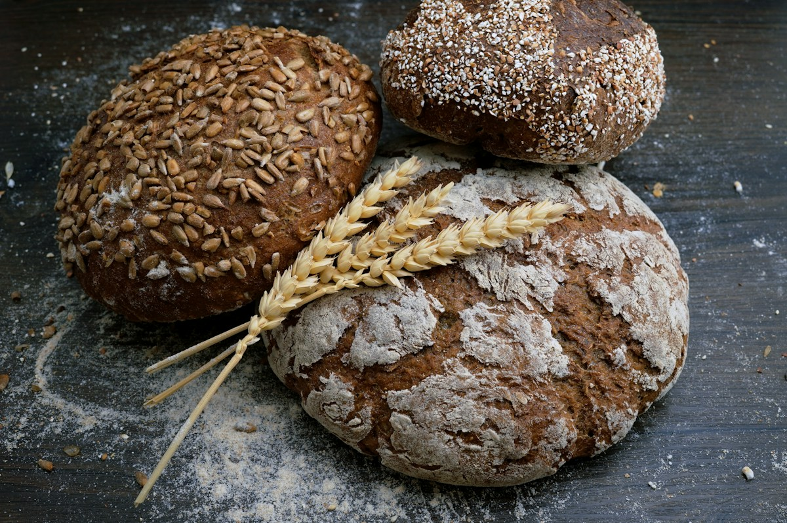

SIMPLE INGREDIENTS. BEAUTIFUL MOMENTS.a daily dose
of happiness. ✳
of happiness. ✳
01 / THE YORU WAY
Bukan sekadar roti.
Sepotong rasa hangat.
Yoru adalah undangan untuk berhenti sejenak. Menikmati lapisan pastry yang renyah, aroma mentega, dan hal-hal kecil yang membuat hari terasa lebih baik.
Untuk teman kopi pagi, obrolan sore, atau hadiah kecil untuk diri sendiri. Selalu ada alasan untuk satu gigitan lagi.
Kenali pilihan kami ↗